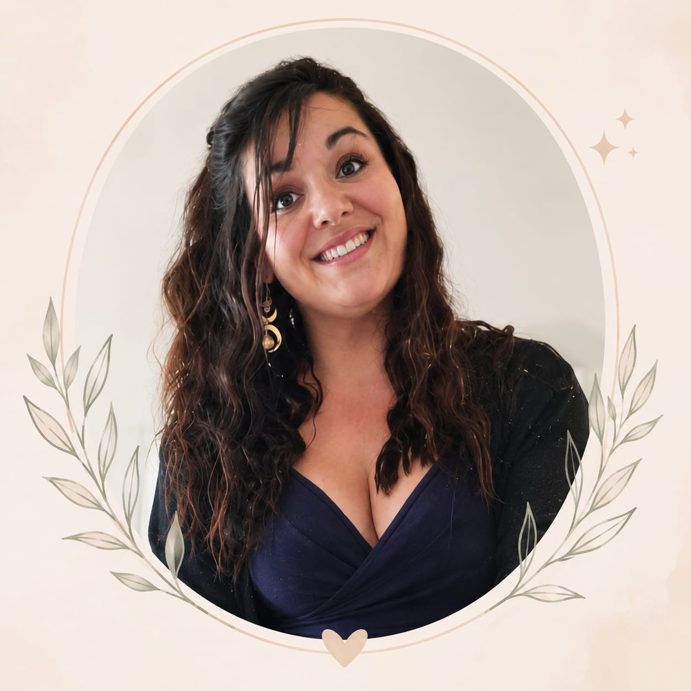
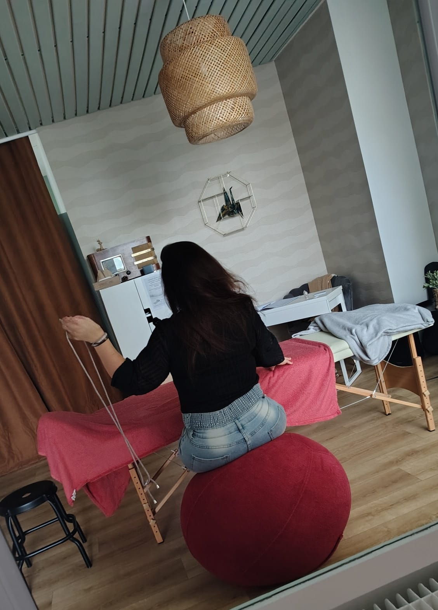
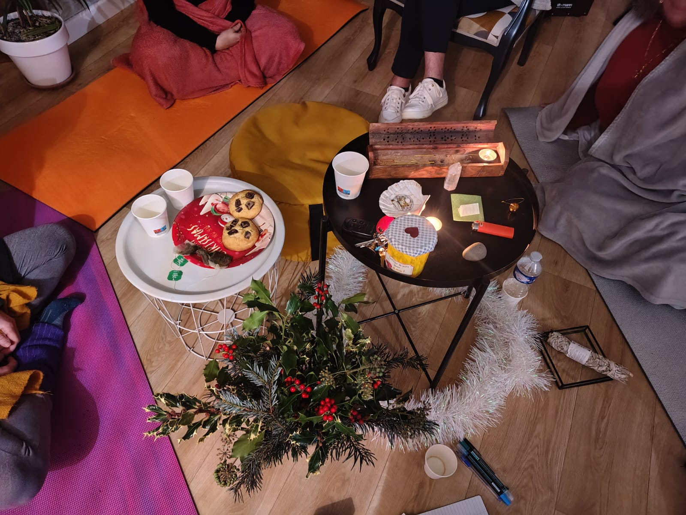
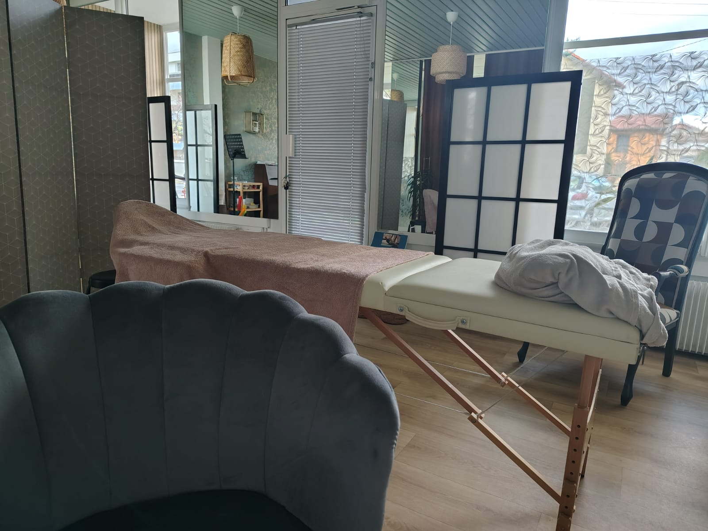
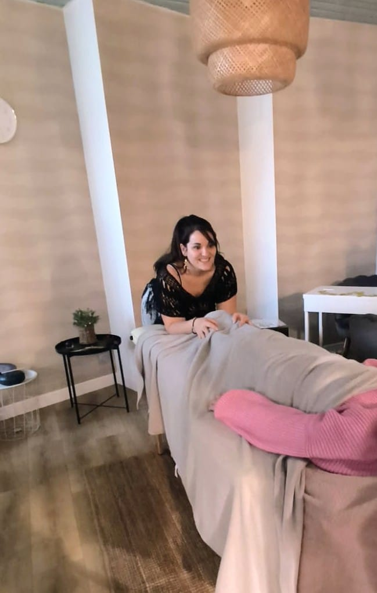
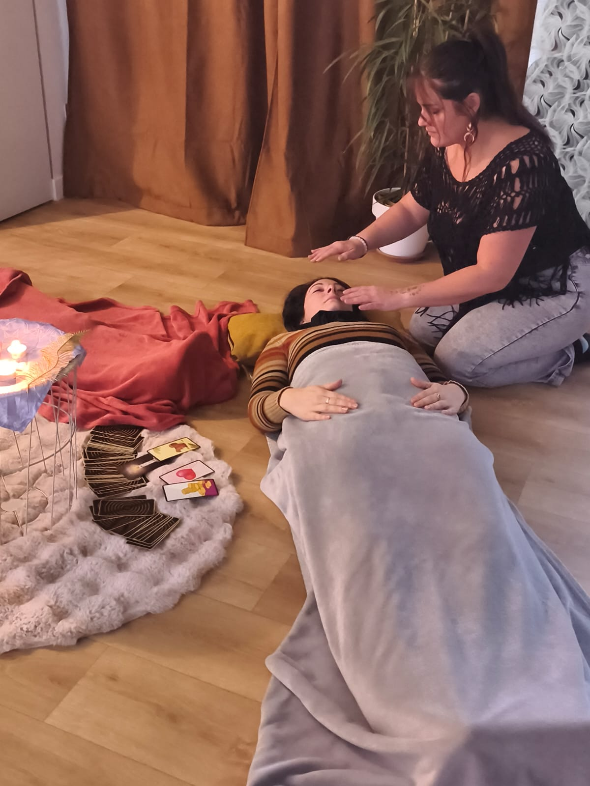

Clémentine Théobald
Praticienne en Reiki, Sophrologue & Hypnopraticienne basée à Chamalières (63400).
Découvrir mes soinsJe vous accompagne vers le mieux-être en combinant Reiki, Sophrologie et Hypnose — avec pour boussole l'écoute, la bienveillance et le respect de votre rythme.
Je m'appelle Clémentine Théobald. Depuis toujours, les autres viennent naturellement à moi pour parler, se confier ou simplement trouver un peu d'apaisement — bien avant même que je ne connaisse le monde de l'énergétique.
Il y a huit ans, un profond bouleversement personnel a changé le cours de ma vie. Ce que j'ai d'abord vécu comme une épreuve est devenu le point de départ d'une véritable renaissance : j'ai exploré ma sensibilité et mis des mots sur cette connexion particulière que je percevais avec les autres.
"Lorsque nous mettons des mots sur les maux,
les dits maux deviennent des mots dits et cessent d'être maudits."
Cette quête de sens m'a menée vers de belles rencontres, des formations et un important travail sur moi-même. Je me suis formée au Reiki (3ᵉ degré), puis à la sophrologie pour intégrer des outils concrets de reconnexion au présent, et enfin à l'hypnose, fascinée par les ressources de l'inconscient.
Ma vie de maman a aussi façonné ma manière d'accompagner : plus d'écoute, de patience et de compréhension des besoins de chacun. Cela m'a naturellement menée vers l'accompagnement d'enfants présentant des troubles du neurodéveloppement, dans le cadre de mon métier d'AESH et auprès d'élèves en ITEP.
Aujourd'hui, je mets au service de chacun l'ensemble de ces expériences. Je ne prétends pas avoir toutes les réponses, mais je crois profondément que chaque personne possède en elle les ressources nécessaires pour avancer — mon rôle est de vous accompagner pour les retrouver, à votre rythme, dans un espace de confiance.
"Si tu veux voler,
laisse tomber tout ce qui te retient."



Situé à Chamalières, mon cabinet est pensé comme une parenthèse hors du temps : lumière douce, matières naturelles et calme propice au lâcher-prise. Chaque détail est choisi pour que vous puissiez, dès votre arrivée, poser vos épaules et vous sentir pleinement accueilli·e.
Que vous veniez pour une séance de Reiki allongée, un accompagnement en sophrologie debout ou une séance d'hypnose, l'espace s'adapte à votre pratique tout en gardant cette même atmosphère chaleureuse et apaisante.

Prendre soin de soi avec douceur, en écoutant ce que le corps et le cœur ont à raconter
Parfois, nous traversons des périodes où tout semble plus lourd : le stress, les émotions, la fatigue, les doutes... Le Reiki offre un espace pour ralentir, souffler et revenir à soi.
Je vous accueille dans un cadre doux et bienveillant, où vous pouvez déposer ce que vous portez, sans avoir à être fort, à expliquer ou à faire quoi que ce soit de particulier. Je pratique aussi sur don libre le charme du feu, du sang et les soins de guérison à distance.
Durant la séance, vous restez confortablement allongée et habillée. Par l'apposition des mains, le Reiki accompagne le corps et l'esprit vers un état de profonde détente. C'est un temps pour vous, une parenthèse où il devient possible de relâcher les tensions, d'apaiser le mental et de retrouver un peu plus d'harmonie intérieure.
Chaque personne vit cette expérience à sa manière. Certains ressentent beaucoup de choses, d'autres simplement un profond calme. Tout est juste.
Avant et après la séance, nous prenons un moment d'échange afin d'accueillir ce qui est présent pour vous.
Le Reiki est une pratique de bien-être complémentaire et ne se substitue pas à un avis ou à un traitement médical.


Rééquilibrage des centres énergétiques pour un retour à l'harmonie intérieure.
Libération des énergies stagnantes, purification de l'aura et du champ énergétique.
Pratique traditionnelle de protection et de transformation par l'énergie du feu.
Gestion des émotions par la sophrologie
Pour moi, la sophrologie n'est pas seulement une technique de relaxation. C'est un véritable apprentissage de soi, qui permet de créer un dialogue entre le corps, les émotions et le mental.
Je pratique une sophrologie essentiellement debout, car le mouvement
favorise une meilleure conscience du corps, de la respiration et des
ressentis. Cette approche est dynamique, concrète et facilement
réutilisable dans la vie quotidienne.
Les séances sont accessibles à tous, dans la mesure où il n'existe
pas de contre-indication médicale au travail debout. Les exercices
sont toujours adaptés aux capacités et au rythme de chacun.
Au fil des séances, vous apprendrez à mieux respirer, à reconnaître les messages de votre corps, à comprendre vos émotions et à développer des outils simples pour retrouver un équilibre au quotidien.
La sophrologie peut vous accompagner pour :
Colères, angoisses, difficultés scolaires… la sophrologie offre aux enfants des clés concrètes.
Stress, surmenage, émotions difficiles — retrouvez ancrage et sérénité dans le quotidien.
Chaque parcours en sophrologie est unique, adapté à votre rythme et à vos besoins profonds.
Tu n'es pas une machine. Ton "mieux" est différent chaque jour — et c'est bien correct comme ça.
L'hypnose est un formidable outil d'accompagnement qui permet d'accéder aux ressources de l'inconscient. Contrairement aux idées reçues, vous restez pleinement acteur de votre séance : vous ne perdez ni le contrôle, ni votre libre arbitre.
L'état hypnotique est un état naturel de conscience modifiée que nous expérimentons tous au quotidien. Dans cet espace, il devient plus facile d'explorer certains fonctionnements, de mobiliser ses ressources et d'ouvrir de nouvelles perspectives de changement.
J'utilise l'hypnose pour accompagner de nombreuses problématiques, notamment :
Selon vos besoins, je peux également intégrer une approche transgénérationnelle. Cette démarche consiste à explorer l'histoire familiale, les schémas répétitifs, les croyances ou les loyautés inconscientes qui peuvent influencer notre manière de vivre aujourd'hui. Ce travail ne cherche pas à désigner des responsables, mais à mieux comprendre certains mécanismes afin de retrouver davantage de liberté dans ses choix.
Pour moi, l'hypnose n'est pas une pratique isolée : elle vient naturellement compléter les autres outils que j'utilise. Chaque accompagnement est unique. Selon votre objectif et votre histoire, je peux associer l'hypnose, la sophrologie ou l'approche énergétique afin de vous proposer un accompagnement personnalisé, toujours dans le respect de votre rythme et de vos besoins.
Je vous accueille avec bienveillance pour un premier échange
Ensemble, nous trouverons le soin le plus adapté à votre chemin.